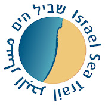

שימור מורשת ההעפלה בשביל הים
יוזמה ערכית-לאומית להנצחת סיפור ההעפלה לאורך חופי ישראל

קריאה לשיתוף פעולה
אנו מבקשים את הצטרפותה הרשמית של רשותכם ליוזמת מורשת ההעפלה בשביל הים, מתוך הכרה עמוקה בחשיבותה הציבורית והלאומית.
השלבים הבאים עם הרשות:
1. מתן אישור עקרוני לקידום המיזם בתחומה.
2. מינוי גורם מקצועי מוסמך מטעמה (מתאם מוניציפלי) לתיאום שוטף.
1. מתן אישור עקרוני לקידום המיזם בתחומה.
2. מינוי גורם מקצועי מוסמך מטעמה (מתאם מוניציפלי) לתיאום שוטף.
📞 לתיאום וקידום המיזם:
אדריכל ירדן ערמון
ראש צוות רשויות במיזם | 052-5717680
פרופ' סנונית שהם
יו"ר ארגון מעפילי קפריסין
avi.schaul@gmail.com
הערך והחזון לרשות המקומית
ההליכה לאורך החוף הופכת למסע של היכרות עם אחד הפרקים המכוננים בתולדות המדינה, מתוך מפגש ישיר וחווייתי בין נוף, מקום וסיפור.
הצטרפות הרשות למיזם מבטאת שותפות במהלך לאומי בעל נראות ציבורית וערכית גבוהה, המעניקה לרשות עוגנים משמעותיים:
- חיזוק הגאווה המקומית: חיבור נכסי החוף והטיילות המקומיות לסיפור היסוד של הקמת המדינה.
- עוגן חינוכי מוביל: יצירת "כיתת שטח" פתוחה עבור בתי הספר העירוניים ותנועות הנוער לסיורים ופעילות מבוססת מקום.
- תיירות רכה ואיכותית: שילוב רצועת החוף בנתיב מורשת ארצי המושך מטיילים לאורך כל השנה.